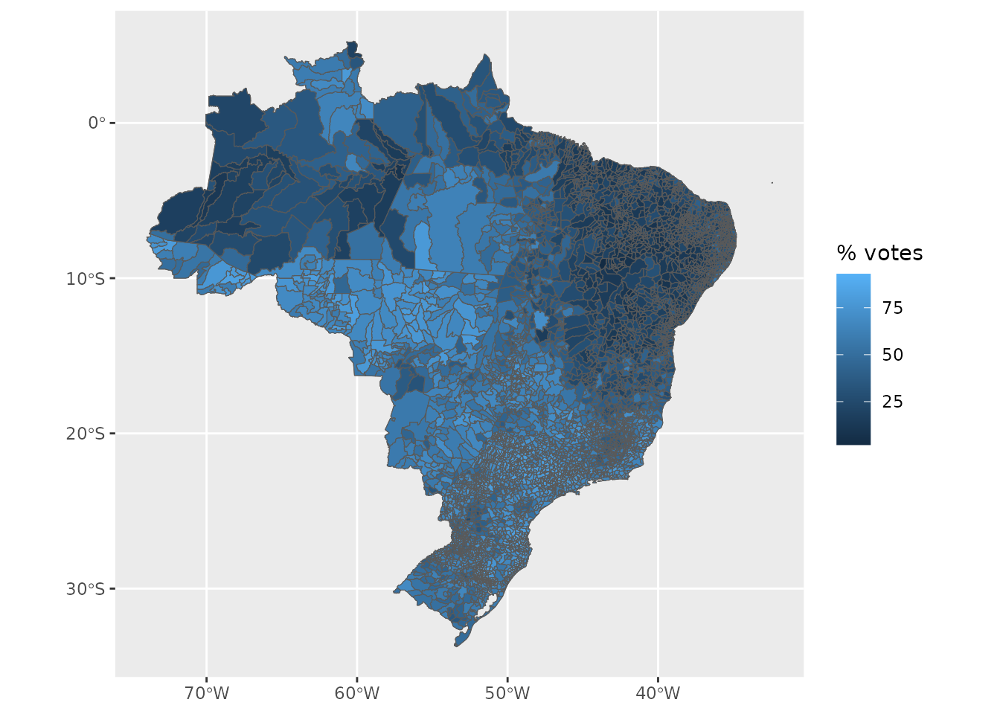
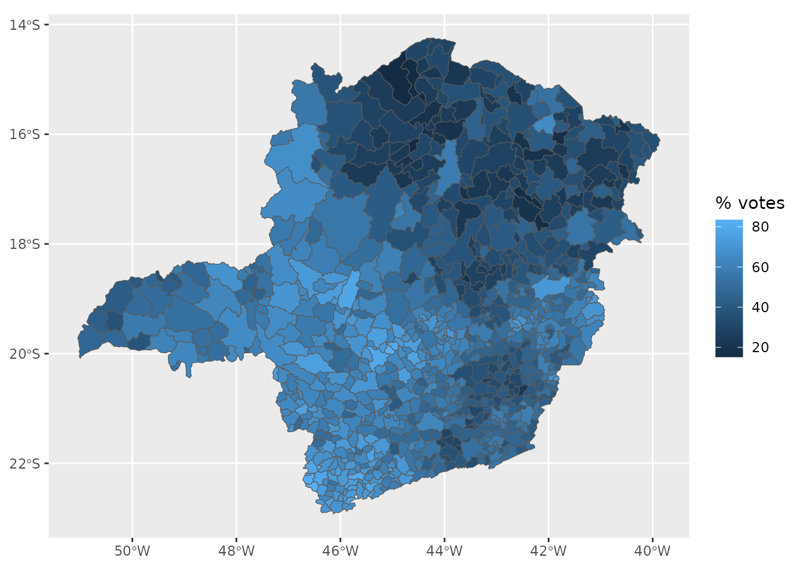

Results of the 2018 Brazilian Presidential election
Fábio N. Demarqui
Source:vignettes/election2018.Rmd
election2018.RmdThis vignette aims to show how the results of the 2018 Brazilian presidential election can be combined with data from the COVID-19 pandemic.
library(covid19br)
library(tidyverse)
# loading the election data:
data(election2018Cities)
# looking at the data:
glimpse(election2018Cities)
#> Rows: 5,570
#> Columns: 11
#> $ region <chr> "North", "North", "North", "North", "North", "North",…
#> $ state <chr> "AC", "AC", "AC", "AC", "AC", "AC", "AC", "AC", "AC",…
#> $ city <chr> "Acrelândia", "Assis Brasil", "Brasiléia", "Bujari", …
#> $ region_code <dbl> 1, 1, 1, 1, 1, 1, 1, 1, 1, 1, 1, 1, 1, 1, 1, 1, 1, 1,…
#> $ state_code <dbl> 12, 12, 12, 12, 12, 12, 12, 12, 12, 12, 12, 12, 12, 1…
#> $ mesoregion_code <int> 1202, 1202, 1202, 1202, 1202, 1201, 1202, 1201, 1201,…
#> $ microregion_code <int> 12004, 12005, 12005, 12004, 12004, 12001, 12005, 1200…
#> $ city_code <int> 120001, 120005, 120010, 120013, 120017, 120020, 12002…
#> $ Bolsonaro <int> 5165, 2333, 8711, 4676, 3895, 31147, 6284, 6296, 1375…
#> $ Haddad <int> 1300, 1660, 3208, 1274, 1086, 7818, 2026, 5256, 1415,…
#> $ pop <dbl> 15256, 7417, 26278, 10266, 11733, 88376, 18411, 34780…
election2018Cities <- election2018Cities %>%
add_geo() %>%
mutate(
prop = 100*Bolsonaro/(Bolsonaro + Haddad),
) %>%
pivot_longer(cols = c("Bolsonaro", "Haddad"), values_to = "votes", names_to = "candidate")
ggplot(election2018Cities) +
geom_sf(aes(fill = prop)) +
labs(fill = "% votes")
The 2018 Brazilian presidential election results observed in Minas
Gerais (MG) state, for instance, can be easily extracted from the data
set election2018Cities as illustrated below:
# extracting the data:
mg_election <- election2018Cities %>%
filter(state == "MG")
# visualizing:
ggplot(mg_election) +
geom_sf(aes(fill = prop)) +
labs(fill = "% votes")
The package covid19br also provides datasets
containing Development Human Indexes (DHI) at city
(ipeaCities), state (ipeaStates) and region
(ipeaRegions) levels. The code presented below shows how to
combine the COVID-19 data (at region level) with the election and the
DHI datasets.
# loading the election data:
data(election2018Regions)
# putting all together
regions <- downloadCovid19("regions") %>%
filter(date == max(date)) %>%
add_epi_rates() %>%
left_join(election2018Regions) %>%
add_geo()
#> Downloading COVID-19 data from the official Brazilian repository: https://covid.saude.gov.br/
#> Please, be patient...
#> Done!
#> Joining with `by = join_by(region, pop)`
#> Joining with `by = join_by(region, pop)`
glimpse(regions)
#> Rows: 5
#> Columns: 23
#> $ region <chr> "Midwest", "North", "Northeast", "South", "Southeast"
#> $ date <date> 2023-09-01, 2023-09-01, 2023-09-01, 2023-09-01, 2023-09-0…
#> $ epi_week <int> 35, 35, 35, 35, 35
#> $ newCases <int> 0, 0, 0, 0, 0
#> $ accumCases <int> 4368298, 2918074, 7410518, 8035252, 15039564
#> $ newDeaths <int> 0, 0, 0, 0, 0
#> $ accumDeaths <int> 66459, 51781, 135946, 111809, 339318
#> $ newRecovered <int> NA, NA, NA, NA, NA
#> $ newFollowup <int> NA, NA, NA, NA, NA
#> $ pop <dbl> 16297074, 18430980, 57071654, 29975984, 88371433
#> $ incidence <dbl> 26804.19, 15832.44, 12984.59, 26805.63, 17018.58
#> $ lethality <dbl> 1.52, 1.77, 1.83, 1.39, 2.26
#> $ mortality <dbl> 407.7971, 280.9455, 238.2023, 372.9953, 383.9680
#> $ Bolsonaro <int> 5163023, 4242504, 8824454, 11084395, 28351800
#> $ Haddad <int> 2595426, 3933015, 20289812, 5152685, 15016238
#> $ DHI <dbl> 0.6894678, 0.6079510, 0.5906721, 0.7141128, 0.6989844
#> $ EDHI <dbl> 0.5841416, 0.4904276, 0.4884060, 0.6130152, 0.6081894
#> $ LDHI <dbl> 0.8224442, 0.7803808, 0.7543157, 0.8353316, 0.8281859
#> $ IDHI <dbl> 0.6844893, 0.5928241, 0.5622705, 0.7134444, 0.6811571
#> $ region_code <dbl> 5, 1, 2, 4, 3
#> $ area [km^2] 1611899.2 [km^2], 3870624.8 [km^2], 1560644.5 [km^2], 56…
#> $ demoDens [1/km^2] 10.110480 [1/km^2], 4.761758 [1/km^2], 36.569286 [1/km^2]…
#> $ geometry <GEOMETRY [°]> POLYGON ((-54.08399 -23.864..., POLYGON ((-68.38821 -11.0…